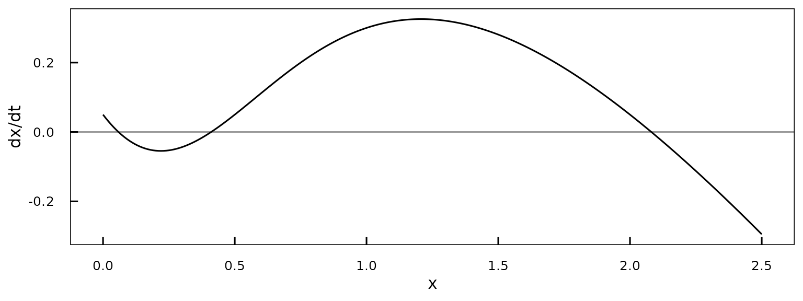

cppDE reaches a steady state in two ways: by integrating the ODE
until the flow stops (rootfunc = "equilibrate"), with
sensitivities, or by solving \(f(x, p) =
0\) directly with ptc(), under conservation
laws.
Model definition
The decay chain with production k0 of \(A\) has the steady state \(A = k_0/k_1\), \(B = k_0/k_2\). rootfunc of cppODE() ends the
integration: "equilibrate" at steady state, a vector of
expressions at the first zero of any of them. ptc() takes a
cppFUN() object with
forward derivatives, here the right-hand sides of an enzyme \(E + S \rightleftharpoons ES \to E + P\)
with \(P \to S\), and of a bistable
switch.
eqns <- c(A = "k0 - k1*A", B = "k1*A - k2*B")
parms <- c(A = 1, B = 0, k0 = 1, k1 = 0.5, k2 = 0.2)
steady <- cppODE(eqns, rootfunc = "equilibrate", modelname = "g5_steady", compile = FALSE)
cross <- cppODE(eqns, rootfunc = "A - B", modelname = "g5_cross", compile = FALSE)
enzyme <- c(E = "-kon*E*S + (koff + kcat)*ES",
S = "-kon*E*S + koff*ES + kback*P",
ES = " kon*E*S - (koff + kcat)*ES",
P = " kcat*ES - kback*P")
enz <- cppFUN(enzyme, variables = names(enzyme),
parameters = c("kon", "koff", "kcat", "kback"), modelname = "g5_enzyme")
switch1 <- cppFUN(c(x = "a + b*x^2/(1 + x^2) - x"), variables = "x",
parameters = c("a", "b"), modelname = "g5_switch")
compile(steady, cross, enz, switch1, output = "guide5", cores = 2)Integration to steady state
Under rootfunc = "equilibrate", solveODE() stops once
every \(|\mathrm{d}x_i/\mathrm{d}t| \le
\mathtt{roottol}\, |x_i| + \mathtt{abstol}\), on the
sensitivities as well. The last time of times bounds the
integration; the last row of the result is the steady state with
sensitivities.
outQ <- solveODE(steady, c(0, 1e4), parms, abstol = 1e-10, reltol = 1e-10, roottol = 1e-10)
n <- length(outQ$time)
outQ$time[n]
#> [1] 125.0591
outQ$variable[n, ]
#> A B
#> 2 5
outQ$tangent[n, , ]
#> sens
#> variable A B k0 k1 k2
#> A 8.527872e-23 0.000000e+00 2 -4.00000e+00 0
#> B 2.477571e-11 1.486542e-11 5 1.32137e-10 -25\(\partial A/\partial k_0 = 1/k_1 =
2\) and \(\partial B/\partial k_2 =
-k_0/k_2^2 = -25\); the derivatives in the initial values vanish.
A smaller roottol integrates longer and leaves a smaller
residual in each derivative.
Termination root
An expression as rootfunc stops at the first zero
crossing, here where \(A\) and \(B\) meet. The output ends at the crossing
time.
Pseudo-transient continuation
ptc() solves \(f(x, p) =
0\) for the variables solve, paired with the outputs
rows, by pseudo-transient continuation: implicit Euler
steps on \(\dot x = f\) far from the
root, Newton steps near it (methods). The
enzyme conserves \(E + ES\) and \(S + ES + P\), so the Jacobian is singular
and the steady state is fixed by the totals: C holds the
conservation laws as rows, columns named by the solved variables, and
total the right-hand side of \(C
x = \mathtt{total}\).
C <- rbind(Etot = c(E = 1, S = 0, ES = 1, P = 0),
Stot = c(E = 0, S = 1, ES = 1, P = 1))
pe <- c(kon = 1, koff = 0.5, kcat = 0.3, kback = 0.1)
ss <- ptc(enz, x = c(E = 1, S = 1, ES = 1, P = 1), parms = pe, C = C, total = c(1, 10))
ss$x
#> E S ES P
#> 0.1104686 6.4418745 0.8895314 2.6685941
c(converged = ss$converged, iterations = ss$iterations)
#> converged iterations
#> 1 9
ss$message
#> [1] "converged"
drop(C %*% ss$x)
#> Etot Stot
#> 1 10
do.call(enz$func, c(as.list(ss$x), as.list(pe)))
#> E S ES P
#> [1,] -3.379727e-16 1.287859e-14 3.379727e-16 -1.329308e-14Variables outside solve keep the values of
x. With the substrate clamped, the remaining variables are
solved with the enzyme total alone.
Stability of the steady state
With flow = TRUE (default), the outputs are the
right-hand side of an ODE and ptc() returns a stable steady
state: the real part of every Jacobian eigenvalue on the kernel of
C is non-positive (stability test). From an unstable
root the search continues along the unstable direction.
flow = FALSE takes plain equations and returns any regular
root. The switch has a stable root on each side of an unstable one, near
\(x = 0.41\) for \(a = 0.05\), \(b =
2.5\).
ps <- c(a = 0.05, b = 2.5)
sapply(c(0.40, 0.42), function(x0) c(
start = x0,
flow = ptc(switch1, x = c(x = x0), parms = ps)$x,
noFlow = ptc(switch1, x = c(x = x0), parms = ps, flow = FALSE)$x))
#> [,1] [,2]
#> start 0.40000000 0.4200000
#> flow.x 0.05853728 2.0810098
#> noFlow.x 0.41045292 0.4104529
xs <- seq(0, 2.5, by = 0.01)
ggplot(data.frame(x = xs, f = switch1$func(x = xs, a = 0.05, b = 2.5)[, "x"]), aes(x, f)) +
geom_hline(yintercept = 0, color = "grey60") +
geom_line() +
labs(y = "dx/dt")
controls = list(stability = FALSE) accepts any root of
the flow; stabilityTol accepts a root whose leading
eigenvalue is at most this positive value, as near a Hopf bifurcation.
positive = TRUE (default) keeps the solved variables
positive; they must start positive.
Tolerances of ptc()
controls of ptc() sets the iteration:
| control | default | meaning |
|---|---|---|
reltol |
1e-10 |
residual of each row relative to the turnover, the sum of the rates that cancel in it |
abstol |
1e-14 |
absolute floor, relative to the largest Jacobian entry of the row |
flowTol |
1 |
relative local error of a pseudo-time step |
maxit |
400 |
iterations of one descent |
dtInit |
1e-2 |
first pseudo-time step, relative to the fastest rate
under flow = TRUE
|
zmax |
5 |
largest change of the logarithm of a variable per step |
stability |
TRUE |
require a stable root under
flow = TRUE
|
stabilityTol |
0 |
largest leading eigenvalue counted as stable |
After convergence, Newton steps bring each variable to within
reltol * (abs(x) + abstol) of the root. The result depends
on the start, the parameters and the controls only, so equal inputs
return the same root to the last digit.
sapply(c(1e-4, 1e-10), function(tol) {
r <- ptc(enz, x = c(E = 1, S = 1, ES = 1, P = 1), parms = pe, C = C, total = c(1, 10),
controls = list(reltol = tol))
c(reltol = tol, iterations = r$iterations, deltaES = r$x[["ES"]] - ss$x[["ES"]])
})
#> [,1] [,2]
#> reltol 1.000000e-04 1e-10
#> iterations 8.000000e+00 9e+00
#> deltaES -5.534966e-09 0e+00ptc() returns the steady state without derivatives.
dMod2 calls the same solver from C++ for the steady states of
Pimpl(), with sensitivities by the implicit function
theorem.